Annotations in Cytoscape are stored as a set of ontologies (e.g. the Gene Ontology - GO). An ontology consists of a set of controlled vocabulary terms that annotate the objects. For example, using the Gene Ontology, the Saccharomyces Cerevisiae CDC55 gene’s biological process is described as “protein biosynthesis”, to which GO has assigned the number 6412 (a GO ID).
GO 8150 biological_process
GO 7582 physiological processes
GO 8152 metabolism
GO 44238 primary metabolism
GO 19538 protein metabolism
GO 6412 protein biosynthesis
Graphical View of GO Term 6412: protein biosynthesis
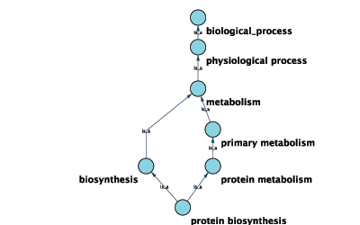
Cytoscape can use this ontology DAG (Directed Acyclic Graph) to annotate objects in networks. The Ontology Server (originally called Bio Data Server) is a Cytoscape feature which allows you to load, navigate, and assign annotation terms to nodes and edges in a network. In version 2.4, Cytoscape has enhanced GUI for loading ontology and associated annotation, which enables you to load both local and remote files.
The standard file formats used in Cytoscape Ontology Server are OBO and Gene Association. The GO website details these file formats:
Ontologies and Definitions: http://www.geneontology.org/GO.downloads.shtml#ont
Current Annotations: http://www.geneontology.org/GO.current.annotations.shtml
OBO file is the ontology DAG itself. This file defines relationships of ontology terms. Since version 2.4, Cytoscape can load all ontology files written in OBO format. The full listing of ontology files are available from Open Biomedical Ontologies (OBO) website:
OBO Ontology Browser: http://obo.sourceforge.net/browse.html
Sample OBO File - gene_ontology.obo: http://www.geneontology.org/ontology/gene_ontology_edit.obo
format-version: 1.2 date: 27:11:2006 17:12 saved-by: midori auto-generated-by: OBO-Edit 1.002 subsetdef: goslim_generic "Generic GO slim" subsetdef: goslim_goa "GOA and proteome slim" subsetdef: goslim_plant "Plant GO slim" subsetdef: goslim_yeast "Yeast GO slim" subsetdef: gosubset_prok "Prokaryotic GO subset" default-namespace: gene_ontology remark: cvs version: $Revision: 5.49 $ [Term] id: GO:0000001 name: mitochondrion inheritance namespace: biological_process def: "The distribution of mitochondria, including the mitochondrial genome, into daughter cells after mitosis or meiosis, mediated by interactions between mitochondria and the cytoskeleton." [GOC:mcc, PMID:10873824, PMID:11389764] synonym: "mitochondrial inheritance" EXACT [] is_a: GO:0048308 ! organelle inheritance is_a: GO:0048311 ! mitochondrion distribution [Term] id: GO:0000002 name: mitochondrial genome maintenance namespace: biological_process def: "The maintenance of the structure and integrity of the mitochondrial genome." [GOC:ai] is_a: GO:0007005 ! mitochondrion organization and biogenesis
Default List of Ontologies
Cytoscape provides a list of ontologies available in OBO format. If Internet connection is available, Cytoscape imports ontology and annotation file directly from the remote source. The table below is the list of default ontoligies.
Table 21.
Ontology Name | Description |
Gene Ontology Full | This data source contains full size GO dag, which contains all GO terms. This OBO file is written in version 1.2 format. |
Generic GO slim | Subset of general GO Terms. Includes higer-level terms only. |
Yeast GO slim | Subset of GO Terms for annotating Yeast data sets. Maintained by SGD. |
Molecule role (INOH Protein name/family name ontology) | A structured controlled vocabulary of concrete protein names and generic (abstract) protein names. This ontology is a INOH pathway annotation ontology, one of a set of ontologies intended to be used in pathway data annotation to ease data integration. This ontology is used to annotate protein names, protein family names, generic/concrete protein names in the INOH pathway data. INOH is part of the BioPAX working group. |
Event (INOH pathway ontology) | A structured controlled vocabulary of pathway centric biological processes. This ontology is a INOH pathway annotation ontology, one of a set of ontologies intended to be used in pathway data annotation to ease data integration. This ontology is used to annotate biological processes, pathways, sub-pathways in the INOH pathway data. INOH is part of the BioPAX working group. |
Protein-protein interaction | A structured controlled vocabulary for the annotation of experiments concerned with protein-protein interactions. |
Pathway Ontology | The Pathway Ontology is a controlled vocabulary for pathways that provides standard terms for the annotation of geneproducts. |
PATO | PATO is an ontology of phenotypic qualities, intended for use in a number of applications, primarily phenotype annotation. For more information, please visit PATO wiki (http://www.bioontology.org/wiki/index.php/PATO:Main_Page). |
Mouse pathology | Mouse Pathology Ontology (MPATH) is an ontology for mutant mouse pathology. This is Version 1. |
Human disease | This ontology is a comprehensive hierarchical controlled vocabulary for human disease representation. For more information, please visit Disease Ontology website (http://diseaseontology.sourceforge.net/). |
Although Cytoscape can import all kinds of ontologies in OBO format, you need to provide ontology-specific annotation file to annotate node/edge/network in Cytoscape. For example, while you can annotate human network data with GO Full and Gene Association file for human, you cannot annotate it with the combination of the Human disease ontology file and Gene Association file because the Gene Association file is annotation data only for GO.
Mapping Ontology - Annotation files are associated with a specific ontology. This means, you can map GO terms onto human network using Gene Association file for human, but cannot map Human Disease ontology terms with Gene Association file. In that case, you need an annotation file for Human disease ontology(see the diagram below):
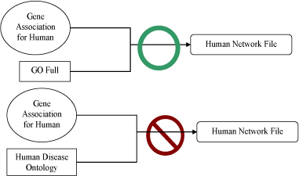
Visualize and Browse Ontology DAG (for Advanced Users)
Relationships between ontology terms are usually represented as Directed Acyclic Graph (DAG). This is a special case of a network (or graph), where nodes are ontology terms and edges are relationships between terms. Originally, Cytoscape used special data structure called BioDataServer to store ontology DAGs. Since version 2.4, ontology data is stored in the same data structure as normal networks. This enables users and plugin writers to visualize, browse and manipulate ontology DAGs just like other networks. The following is an example of visualization of an ontology DAG (Generic GO Slim):
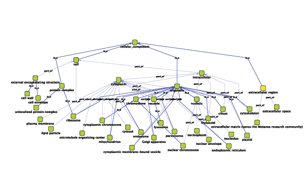
Every ontology term and relationship can have attributes. In the OBO files, ontology terms have optional fields such as definition, synonyms, comments, or cross-references. These fields will be imported as node attributes. To browse those attributes, please use attribute browser (see the example below):
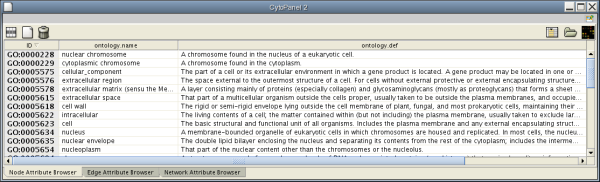
Note 1: Some ontologies have a lot of terms. For example, the full Gene Ontology contains more than 20,000 terms. If you need to save memory, you can remove this ontology DAG from Network Panel (Right click on the Ontology Name → Destroy Network).
- Note 2: All ontology DAGs will be saved in the session file. To minimize the session file size, you can delete the Ontology DAG before saving session.
Gene Association (GA) file is an annotation only for Gene Ontology. This is a species specific annotation file for GO terms. Gene Assoiation files will only work with Gene Ontologies and NOT others!
Sample Gene Association File (gene_association.sgd - annotation file for yeast):
SGD S000003916 AAD10 GO:0006081 SGD_REF:S000042151|PMID:10572264 ISS P aryl-alcohol dehydrogenase (putative) YJR155W gene taxon:4932 20020902 SGD SGD S000005275 AAD14 GO:0008372 SGD_REF:S000069584 ND C aryl-alcohol dehydrogenase (putative) YNL331C gene taxon:4932 20010119 SGD
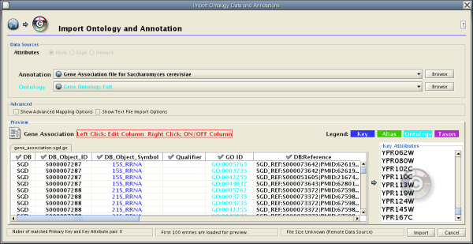 Cytoscape 2.4 provides a graphical user interface to import both ontology and annotation files at the same time.
For user's convenience, Cytoscape has a list of URLs for commonly used ontology data and a complete set of Gene Association files. To import Gene Ontology and Gene Association files for the loaded networks, please follow these steps:
Important: All data sources in the preset list are remote URLs, meaning a network connection is required!
Step 1. Select Annotation File

Select File → Import → Ontology and Annotation... to open the Import Ontology and Annotation dialog. From the Annotation combo box, select a gene association file for your network. For example, if you want to annotate yeast network, select Gene Association file for Saccharomyces cerevisiae.
Step 2. Select Ontology File
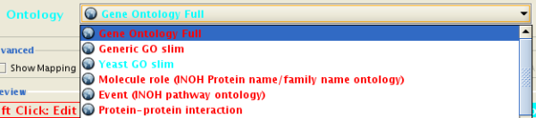
Select an Ontology data (OBO file) from Ontology combo box. If the file is not loaded yet, they are shown in red. The first three files are Gene Ontology files. You can load other ontologies, but you need your own annotation file to annotate networks.
Step 3. Start Import
Once you click Import button, Cytoscape start loading OBO and Gene Association files from the remote sources. If you choose GO Full it may take a while since it is a large data file.
Step 4.
When Cytoscape finishes to import files, the window will be automatically closed. All attributes mapped by this function have prefix annotation and looks like this: annotation.[attribute_name]. All ontologies will be added to the end of branch Ontology DAGs.
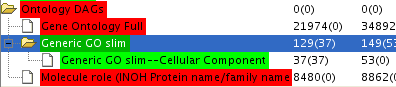
Ontology DAGs have some attributes associated with the terms. All attributes associated with ontology terms have prefix ontology. They have at least one attribute, ontology.name. For more informations about detail of attributes for ontology DAGs, please read OBO specification document.
- Note: Cytoscape supports both OBO format version 1.0 and 1.2.
Ontology and Annotation Import function is designed to import general ontology and annotation files. Internally, mapping ontology terms onto existing networks is same as joining three data tables in Cytoscape. An Ontology DAG, an annotation file, and networks are used in this process (see the example below).
Network Data
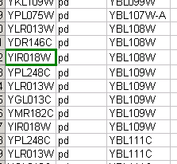
Ontology Data
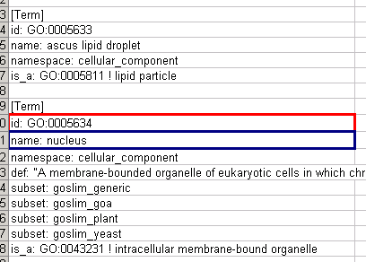
Annotation Data
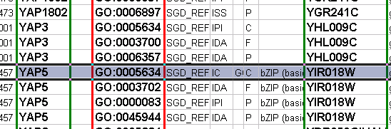
Mapping Result
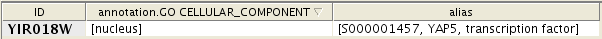
If you want to map ontology terms onto network objects, you need to create a custom annotation file. The annotation file should contain at least 2 columns: aprimary key and an ontology term ID. Primary key is the value for mapping between annotation file and network. Usually, node/edge ID is used as primary key, but you may choose any of the available attributes. Ontology term ID is the key for mapping between the ontology DAG and the annotation file. Using these data sources, you can annotate network objects in Cytoscape.
Suppose you have a small network:
node_1 pp node_2 node_3 pp node_1 node_2 pp node_3
and you want to annotate this network with Ontology A, which is an ontology DAG available in OBO format. In this case, you need an annotation table file looks like this:
node_1 OA_0000232 node_2 OA_0000441 node_3 OA_0000702
where OA_*** represents an ontology term ID. This example is a file with the minimum necessary number of columns, however you can include additional columns that will appear as additional node attributes.
Some ontologies will be used to annotate edges or networks. For example, Protein-protein interaction ontology is a controlled set of terms for annotating interactions between proteins, so ontology terms should be mapped onto edges (see example below).
node_1 (pp) node_2 MI:0445 node_3 (pp) node_1 MI:0046 node_2 (pp) node_3 MI:0346
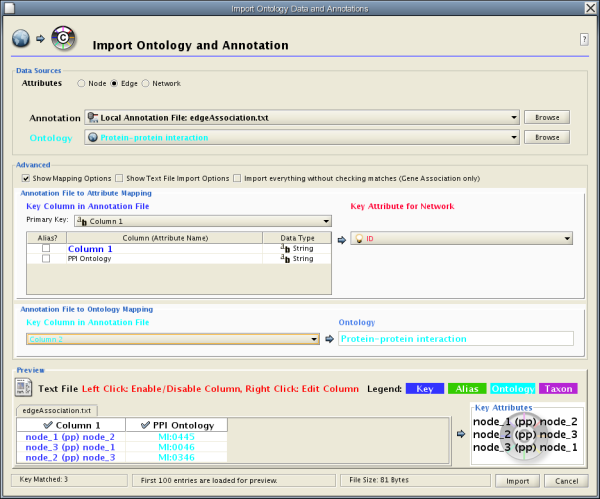
The basic operation of Ontology and Annotation Import is the same as Attribute Table Import. The main difference is that you need to specify an additional key for mapping:
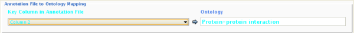
By selecting a column from Key Column in Annotation File combo box, you can specify the key for mapping between ontology terms and annotation file.
Note: When you load Gene Association files, Cytoscape uses a special loader program designed only for Gene Association files. Because of this program, all attributes will be named automatically. Also, ontology IDs will be converted into term names and NCBI taxsonomy ID will be converted into actual species name. However, for custom annotation files, those processes will not be applied. All ontology terms will be mapped as term IDs.